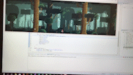
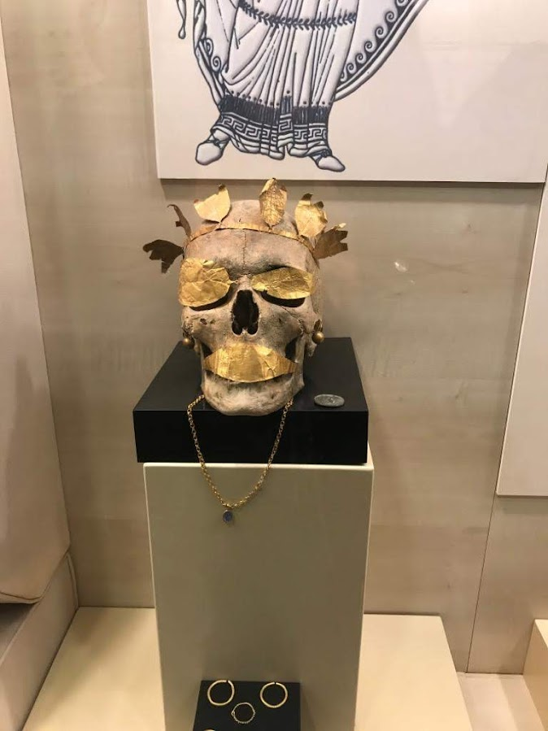

Stanford University CS Bridge Program 2019

CS Bridge program was a collaboration between Stanford University and Koc University to give the course "An Introduction to Computer Programming" which is familiar with the CS106A course at Stanford University. During this two week long course I stayed at Koc University and developed a final project at the end of the course.
Github page of the final project
Github page of the final project


13th International Robot Competition 2019

I participated in the competition in the Industrial Robotic Arm category. I designed the mechanical parts of the robot in Fusion 360. For Control System I used an Arduino Uno board.
link of the new which published on my high school's website
link of the new which published on my high school's website
eTwinning Museology and Museum Education Project 2019

The eTwinning action is an initiative of the European Commission that aims to encourage European schools to collaborate using Information and Communication Technologies (ICT) by providing the necessary infrastructure (online tools, services, support).(Wikipedia 2022). In this project, I visited museums and historical places near Amasya and introduced these places with online tools.
Tübitak 2204-A High School Students Research Project Competition 2019/1

In the field of mathematics, I developed a research project called Bu Soru Tabloda Olasılık. The English equivalent is this problem is easy to solve in a table. In this research project, I developed a technique to visualize the probability problems for better understanding. During the project I researched probability function, Binomial distribution, Gaussian distribution, Bernoulli distribution.
Tübitak 2204-A High School Students Research Project Competition 2018/1
In the field of mathematics and geometry, I developed a project called Application of Iterative Permutations on a Two-Dimensional Quadratic Plane. In this research project, I made an application for the best possible way in a Two-Dimensional Quadratic Plane with the help of Permutation and Graph theory. During the developement process, I used C# ve Windows Forms technologies